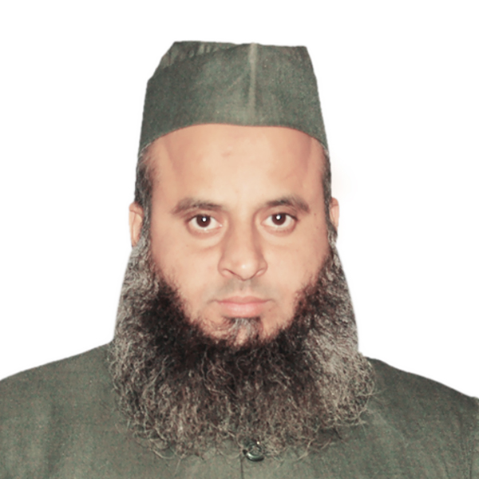

KEYNOTE SPEAKER

Dr. M.M.Sufiyan Baig
Aligarh Muslim University, India
Patrons
-
Mr. Abdullah Ibrahim
Managing Trustee, P. A. Educational Trust(R)
Member, Governing Council, PACE
-
Mr. Zubair Ibrahim
Trustee, P. A. Educational Trust(R)
Member, Governing Council, PACE
-
Mr. Ameen Ibrahim
Trustee, P. A. Educational Trust(R)
Member, Governing Council, PACE
-
Prof. Anthony Woodman
Provost and Senior Deputy Vice Chancellor
University of West London
-
Dr. Nissar Ahmed
Chancellor
Presidency University Bangalore
General Chair
Dr. Ramis M K,
Principal,
P.A College of Engineering, Mangalore
General Co-Chair
Dr. Prashanth Pai
Associate Professor & Head
Department of Mechanical Engineering
P.A College of Engineering, Mangalore
General Advisory Committee
-
Dr. Jayaraj Amin
Vice Chancellor, Mangalore University
-
Dr. D Subhakar
Vice Chancellor, Presidency University
-
Dr. Abdul Sharief
Professor & Dean, School of Engineering, Presidency University
-
Prof. Joao Crespo
Director of ITQB (Institute of Chemical and Biological Technology)
NOVA University of Lisbon, Avenida da República, Portugal
-
Dr. M Abdul Mujeebu
Professor, Imam Abdul Rahman Bin Faisal University, KSA
-
Prof. Syed Akheel Ahmed
Former Vice Chancellor (Yenepoya and Glocal universities)
-
Dr. S A Khan
Professor, IIUM, Kuala Lumpur, Malaysia
-
Mr. Sabarinath Venugopal
Managing Partner, IBM
-
Mr. Brijesh Balakrishnan
President, ITC Infotech
-
Mr. Shaheen Nasaruddin
Director, Information Security, Santander USA
-
Dr. Jaby Mohammed
Professor, Illinois State University, USA
-
Mr.Azim Siddique
Global Solutions Architect, AWS, Chicago Illinois USA
-
Dr.Sufiyan Baig
Professor, Aligarh Muslim University
-
Prof. K.P Soofie
Principal, PAPT,Mangalore
-
Dr. Surfraz J. Hasim
Principal, PAFGC,Mangalore
-
Dr. Saleemullah Khan
Principal, PACP,Mangalore
-
Dr. Sajeesh Raghunandan
Principal, PAIP,Mangalore
Convenors
-
Dr. Sayed Abdulhayan,
Professor, CSE Dept, PACE, Mangalore
Email: sabdulhayan@gmail.com
-
Dr. Manjula,
HOD & Professor, AIML Dept, PACE, Mangalore
Email: hod_aiml@pace.edu.in
Mobile: 81976 03006
Registration Committee
-
Dr. Shamna N V K V,
Associate Professor, CSE Dept, PACE, Mangalore
Email: shamnanv@gmail.com
Mobile: 9449503087
-
Dr. Asif Hassan
Associate Professor, ECE Dept, PACE, Mangalore
Email: asifhassan_ec@pace.edu.in
Mobile: 9743274694
SCIENTIFIC ORGANIZING COMMITTEE FOR ICDR-2023
-
Dr. B H SHEKAR
Professor, Department of Computer Science
Mangalore University
-
Dr. D.S. Guru
Professor, Department of Computer Science
Mysore University
-
Dr. Javed (IIIT Allahabad)
Assistant Professor, Department of Information Technology
Indian Institute of Information Technology (IIIT) Allahabad
-
Dr. Leonid Mestetskiy
Professor, Department of Mathematical Forecast Methods
Moscow State University, Moscow, Russia
-
Dr. Shreyas Rao
Associate Professor, Department of CSIS
BITS-PILANI, WILPD
-
Dr B.Surendiran
Associate Professor, Department of Computer Science
NIT Puducherry
SCIENTIFIC ORGANIZING COMMITTEE FOR Semi-Comm Tech Summit 2023
-
Dr.Md. Rafiqul Islam
Professor & Head, Department of Electrical & Computer Engineering
International Islamic University Malaysia
-
Dr. S. SETU SELVI
Professor, Department of Electronics and Communication
MSRIT, Bangalore
-
Dr. Abdul Khadar A
Associate Professor & Head, Department of Electrical & Electronics
Ballari Institute of Engineering and Management, Ballari
-
Dr. Mohamed HadiHabaebi
Professor, Department of Electrical & Computer Engineering
International Islamic University Malaysia
SCIENTIFIC ORGANIZING COMMITTEE FOR Mech Tech 2023
-
Dr. P S Shivakumar Gouda
Associate Professor, Department of Mechanical engineering
SDM College of Engineering and Technology, Dharwad
-
Dr Madeva Nagaral
Design Engineer, Aircraft Research and Design Centre
HAL, Bangalore
SCIENTIFIC ORGANIZING COMMITTEE FOR IC-ICE-2023
-
Dr. Sasitharan Nagapan
Associate Professor at Faculty of Civil Engineering and Built Environment
Universiti Tun Hussein Onn Malaysia
-
Dr. Jagdish H Godihal
Professor- CIVIL and Deputy Dean-Academic Research
Presidency University Benagluru
SCIENTIFIC ORGANIZING COMMITTEE FOR BioTrendCon-2023
-
Prof. Aamer Ali
Assistant Professor, Department of Chemistry and Bioscience
University of Aalborg, Denmark
-
Dr. Bharathi Prakash
Professor & Head, Department of Microbiology
University College, Mangaluru
-
Dr. Mohammad Tariq
Senior Researcher, Department of Chemistry
NOVA School of Science and Technology, Portugal
-
Dr. Syed Usman Taqui
Post-Doctoral Researcher,Division of Biology and Environmental Science & Engineering
King Abdullah University of Science and Technology (KAUST), Saudi Arabia
-
Dr. Aparna Shivaprasad
Associate Professor, Department of Microbiology and Immunology.
American University of Antigua College of Medicine,Coolidge, Antigua.
-
Dr. Madhukar Mallya H.
Professor, Deputy Registrar of Evaluation, (MAHE), Division of Biochemistry
Manipal,Udupi
SCIENTIFIC ORGANIZING COMMITTEE FOR ICIBS-2023
-
Dr.Sabu Thomas
Vice Chancelleor
M G University, Kerala
-
Dr.Prashantha Kalappa
Dean, ACU-Centre for Research and Innovation, Faculty of Natural Sciences
Adichunchanagiri University, Karnataka